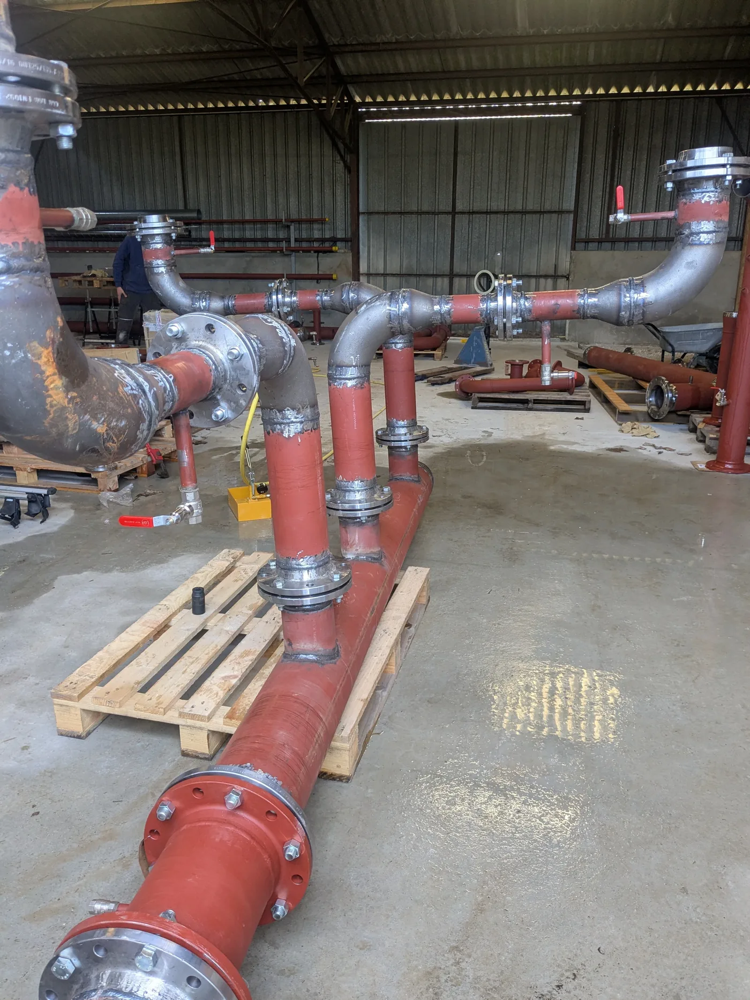

Pré-fabrication Tuyauterie Industrielle
Conception et fabrication en atelier de réseaux de tuyauterie industrielle sur-mesure. Précision, qualité et gain de temps sur chantier pour tous secteurs d'activité.
En savoir plusJOFAGIST accompagne les entreprises, collectivités et particuliers dans leurs projets de pré-fabrication, de rénovation et d'études de travaux, avec rigueur et savoir-faire.
De la pré-fabrication en atelier à la rénovation de salle de bains en passant par le conseil en études de travaux, JOFAGIST est votre partenaire de confiance.
Conception et fabrication en atelier de réseaux de tuyauterie industrielle sur-mesure. Précision, qualité et gain de temps sur chantier pour tous secteurs d'activité.
En savoir plusDe la conception à la pose, JOFAGIST réalise votre salle de bains sur-mesure. Un interlocuteur unique, des finitions soignées et un résultat à la hauteur de vos attentes.
En savoir plusVous accompagner dès la phase d'étude : analyse technique, faisabilité, suivi de chantier. Un conseil expert pour les entreprises, collectivités et particuliers.
En savoir plus
Chez JOFAGIST, chaque intervention est traitée avec le même niveau d'exigence, qu'il s'agisse d'un réseau de tuyauterie industrielle pour un grand groupe ou d'une salle de bains pour un particulier.
Fabrication contrôlée hors site pour une installation plus rapide et plus propre sur chantier.
Un seul contact du devis à la livraison pour simplifier la coordination et éviter les erreurs.
Planification rigoureuse et suivi transparent tout au long du projet.
Basés en Centre-Val-de-Loire, nous intervenons partout en France pour le conseil et la pré-fabrication.
De la pré-fabrication de réseaux industriels complexes à la transformation complète d'une salle de bains.



Industrie, agroalimentaire, énergie, chimie — pré-fabrication de réseaux tuyauterie pour tous secteurs.
Accompagnement des collectivités locales en phase d'étude et de suivi de leurs projets de travaux.
Création de salles de bains sur mesure et conseil pour vos projets de rénovation ou de construction.
Partenaire des professionnels du bâtiment pour la sous-traitance de tuyauterie et le conseil technique.
Articles rédigés par nos experts pour vous aider à mieux préparer vos projets.
Découvrez les avantages de la pré-fabrication en atelier et comment cette technique révolutionne l'installation sur chantier.
Lire l'article
Du projet à la livraison, voici comment JOFAGIST transforme votre salle de bains en un espace moderne et fonctionnel.
Lire l'article
Anticiper les problèmes techniques, optimiser les coûts et sécuriser votre projet : les bonnes raisons de consulter un expert dès la phase d'étude.
Lire l'articlePartagez-nous votre besoin et obtenez une réponse rapide de nos équipes. Devis gratuit et sans engagement.